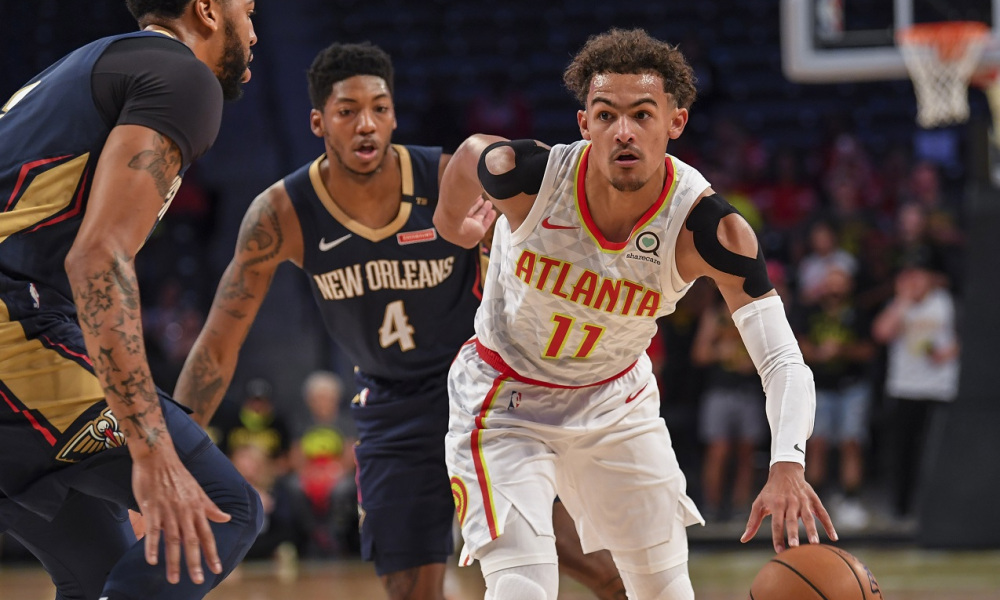

Game 1: Golden State Warriors at Houston Rockets
My Pick:
Houston Rockets
Why I'm Rolling with them:
The Rockets have looked a lot better since getting rid of Melo, and while I don't think he's the reason for it (Harden and Paul have stepped up) I also don't think it's just an anomaly. The Rockets are starting to figure out their defense, only allowing 1 team to score more than 100 points in their last 6 games, and that 1 game came in a win against the Pacers. Golden State has looked vulnerable without Steph Curry in the rotation, and the Rockets should look to capitalize on that at home. Rockets, 110-105.
Game 2: Atlanta Hawks at Denver Nuggets
My Pick:
Denver Nuggets
Why I'm Rolling with them:
Denver has lost their last 4 games in a row, and look to turn it around against this Atlanta team. Jokic should be able to thrive against a team with a weak interior like this Atlanta squad, who have lost five straight against some good and bad teams. Trae Young is producing an incredible number of assists for a rookie, throwing up 8.2 assists per game (he's at almost double the next highest rookie in assists) and scoring 17.5 points as well. This Atlanta team can definitely come out and surprise some teams, I just don't think this strong Denver lineup is one of those teams. Nuggets win this one 119-109.
 Trae Young has been playing like a ROY candidate so far this yearGame 3: San Antonio Spurs at Los Angeles Clippers
My Pick:
Los Angeles Clippers
Why I'm Rolling with them:
The Spurs looked lackluster against Phoenix last night, and this Clippers roster looked really good against a Golden State squad. Harrell has been on fire lately, averaging 23 points a game over his last 3 games. The Spurs are going to be tired, on the road, and won't have the intensity needed to deal with this physical Clippers squad. DeRozan has played well against Bradley in the past, so I'll be curious to see if San Antonio goes with the three guard lineup they ran against the Suns and the Kings. Either way, Clippers win 113-107.